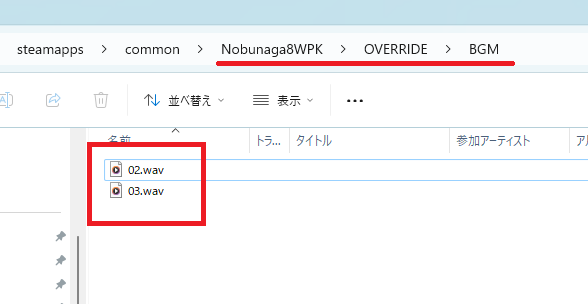

OVERRIDEとは 「より優先する」といった意味となります。
この「OVERRIDEをゲームのルートフォルダ」であると想定して、対応する「データファイル」を配置しておけば
そちらを優先して採用します。
例えば、あなたが、元来のゲームのBGMを差し替えたいとします。
BGMは、
ゲームのルートフォルダ/BGM/***.wav
という位置に配置されています。
そこで、OVERRIDEフォルダをゲームのルート位置だと想定して、
ゲームのルートフォルダ/OVERRIDE/BGM/***.wav
といった位置関係に配置すれば、「配置したファイルだけに限り」そのファイルが優先されます。

既存のやり方ですと、「直接BGMフォルダの中身を変更してしまったいた」かと思います。
このようなやり方で様々なリソースデータやゲームデータの多数変更を繰り返すと、
「ゲーム本体のままのファイル」と「自分が変更したファイル」の区分けが
次第に困難になっていきます。
同一フォルダの中に、「編集されたもの」と「ゲームの元ファイルのまま」のものが混じってしまうと、
その違いを管理するのが難しいためです。
これを OVERRIDE というフォルダの下に集約すれば、違いは一目瞭然です。
半年ほど時が経過して改めてゲームをやろうとした際に、
「どのファイルが変更されていて」「どのファイルが元ファイルのままなのかわからない」といったようなことを防止できます。
OVERRIDE以下のファイルが「変更した」ファイル群なのですから。
Steamのゲーム管理システムでは「ゲームのアンインストール時」には「元ファイルと同じ名前のファイル群」が削除され、
元ファイルとは異なるフルパスのファイル群は残るようになっています。
この性質を利用すれば、「ゲームをアンインストール」しても「ゲーム本体はアンインストールされたが、ModやOVERRIDEフォルダは残る」といった形となります。
後日再び、ゲームをインストールし直した際は、「ModやOVERRIDEフォルダが全てそろった状態」でゲームを再度遊ぶことが出来ます。
ゲーム本体のファイルまるごとディレクトリをバックアップしておく、といった「管理区分けが付いていない」バックアップは必要なくなります。